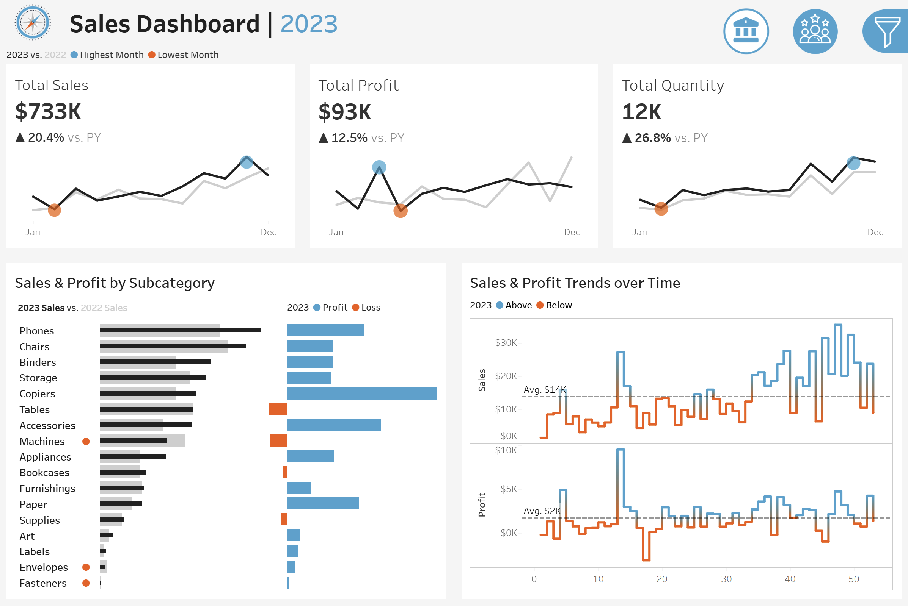
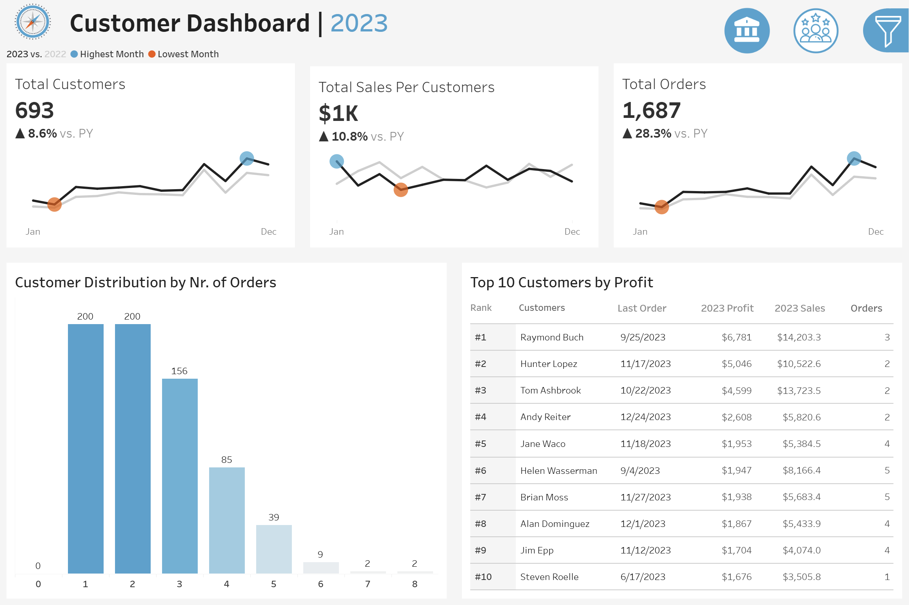
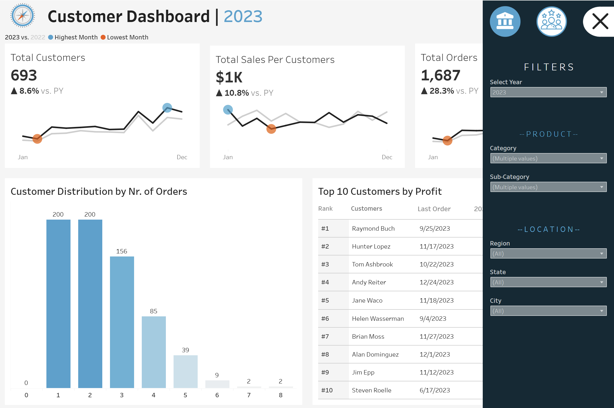

Proje Detayları
Proje Detayları
Hedef
Bu projenin temel hedefi; satış ve müşteri verilerini görsel olarak analiz edilebilir, anlaşılabilir ve aksiyona dönüştürülebilir hale getirmektir. Tableau ile geliştirilen etkileşimli panolar sayesinde karar vericilere; satış trendlerini izleme, müşteri davranışlarını anlama, kârlılığı değerlendirme ve stratejik aksiyonları şekillendirme konusunda güçlü iş içgörüleri sunulması amaçlanmaktadır.
Panolar, kullanıcı dostu arayüzü, dinamik filtreleri ve zaman bazlı analiz kabiliyetleriyle hem büyük resmi gösterecek yönetici KPI’larını hem de derinlemesine detay analizleri bir araya getirmektedir.
Bu doğrultuda Satış (Sales) ve Müşteri (Customer) odaklı iki ayrı pano tasarlanmıştır.
Tableau Public’te Panoyu Görüntüle
Proje Geliştirme Süreci
Bu proje, yalnızca grafik üretmekten çok daha fazlasını kapsayan, uçtan uca planlanmış kapsamlı bir veri görselleştirme sürecidir. Süreç dört ana aşamada ilerledi:
1) İhtiyaç Analizi ve Tasarım Planlaması
İlk olarak, projenin hedeflerini anlamak için detaylı bir ihtiyaç analizi gerçekleştirildi. Kullanıcılardan ve iş karar vericilerinden gelen talepler doğrultusunda, hangi verilerin ön planda olması gerektiği belirlendi. Bu aşamada, iletilmek istenen mesajlara uygun grafik türleri seçildi ve panonun genel yapısını ortaya koyan mockup (Tasarım Taslakları) çizimleri hazırlandı. Renk paleti ise hem estetik hem de okunabilirlik açısından dikkatle belirlendi. Bu aşama, projenin yönünü belirleyen temel yapı taşıydı.
2) Veri Hazırlığı ve Modelleme
Ardından veri kaynakları oluşturuldu ve Tableau’ya bağlanıldı. Veriler ilişkilendirilerek anlamlı bir veri modeli kuruldu. Alan adları ve tablo başlıkları sadeleştirildi, veri tipleri kontrol edilip gerekli düzeltmeler yapıldı. Bu sayede analiz sürecine geçmeden önce, verinin yapısı tam anlamıyla kavranmış oldu.
Veri kaynakları, müşteri ve satış analizleri için oluşturulmuş olup; siparişler, ürünler, müşteriler ve lokasyon gibi temel tabloları içerir. Daha ayrıntılı açıklama ve tablo sınıflandırması için GitHub'daki dokümantasyon bölümünü ziyaret edebilirsiniz.

3) Grafiklerin Oluşturulması
Veriyi anladıktan sonra grafiklerin inşasına geçildi. Bu aşamada özel metrikler için hesaplamalı alanlar oluşturularak test edildi. Grafikler adım adım oluşturuldu ve içerik ile uyumlu hale getirildi. Gereksiz çizgi ve gridler kaldırıldı, eksen başlıkları sadeleştirildi. Renk düzenlemeleri yapıldı ve tooltip'ler ile detaylı bilgi katmanları eklendi. Böylece hem bilgilendirici hem de görsel açıdan güçlü grafikler ortaya çıktı.

4) Dashboard Tasarımı
Son aşamada grafikler, önceden planlanan konteyner yapısına yerleştirilerek iki ayrı pano oluşturuldu: Sales Dashboard ve Customer Dashboard. İçerikler dengeli biçimde yerleştirildi, renk ve boyut düzenlemeleri yapıldı, tüm görünüm “entire view” moduna uyumlu hale getirildi. Lejantlar eklendi, iç ve dış boşluklar ayarlandı. Kullanıcının veriyi filtreleyerek daha özelleştirilmiş analizler yapabilmesi için dinamik filtreler yerleştirildi. Son olarak, görsel açıklığı ve etkileşimi artırmak adına ikonlar eklendi.
Satış panosunun amacı; yıl bazında satış performansını analiz etmek ve satış eğilimlerini anlamak için satış metrikleri ve eğilimlerine genel bir bakış sunmaktır.
Satış panosunun amacı; müşteri verilerine, eğilimlerine ve davranışlarına genel bir bakış sunmayı amaçlamaktadır. Pazarlama ekiplerinin ve yönetimin müşteri segmentlerini anlamasına ve müşteri memnuniyetini artırmasına yardımcı olacaktır.
Resim 6. Müşteri Panosu (Filtre Paneli Açık)

Panoların Özellikleri
- Sorunsuz Gezinme
- İki ayrı pano: Satış ve Müşteri
- Ortak filtreler ile bağlantılı:
- Yıl
- Ürün Kategorisi ve Alt Kategori
- Bölge, Eyalet, Şehir
- Panolar arasında geçişte aynı bağlamı korur.
- Satış Panosu Öne Çıkanlar
- KPI’lar: Toplam Satış, Toplam Kâr, Satış Adedi (YoY)
- Aylık satış ve kâr trendlerinin bir önceki yıl ile karşılaştırması
- Alt kategori bazında satış ve kâr/kayıp çubukları
- Ortalama değer çizgileri ile trend analizleri
- Müşteri Panosu Öne Çıkanlar
- KPI’lar: Toplam Müşteri, Müşteri Başına Satış, Toplam Sipariş (YoY)
- Aylık müşteri ve sipariş trendlerinin bir önceki yıl ile karşılaştırması
- Sipariş sayısına göre müşteri dağılım grafiği
- Karlılık, satış ve aktiviteye göre ilk 10 müşteri tablosu
Öne Çıkan Bulgular
📊 Satış Panosu – Öne Çıkan Bulgular
- Genel Büyüme Eğilimi
- Toplam satış: $733K, geçen yıla göre %20,4 artış
- Toplam kâr: $93K, geçen yıla göre %12,5 artış
- Satılan ürün adedi: 12.000+, %26,8 artış
🔎 Yorum: Hem hacim hem değer açısından güçlü bir büyüme var; bu, stratejilerin işe yaradığını gösteriyor.
- Ürün Alt Kategorisi Bazında Performans
- En çok satan: Telefonlar
- En kârlı: Fotokopi Makineleri
🔎 Yorum: Satış hacmi ve kârlılık her zaman örtüşmüyor. Satış odaklı strateji ile kârlılık odaklı stratejilerin farklı ürünlere yönelmesi gerekebilir.
- Zaman Bazlı Satış Yoğunluğu
- 10–15. haftalar en yoğun satış dönemleri
🔎 Yorum: Bu dönemlerde kampanyalar yapılmış olabilir; nedenini araştırarak tekrar edilebilir başarı fırsatları oluşturulabilir.
👥 Müşteri Panosu – Öne Çıkan Bulgular
- Müşteri Artışı
- Toplam müşteri sayısı: 693, önceki yıla göre %8,6 artış
- Sipariş sayısı: 1.687, %28,3 artış
🔎 Yorum: Sipariş sayısı müşteri artışından daha hızlı büyümüş; bu da müşteri başına sipariş sayısında artış olduğunu gösteriyor (sürdürülebilir bağlılık için pozitif sinyal).
- Müşteri Segmentasyonu
- Sipariş sayısı dağılımına göre çoğunluk 1–2 sipariş aralığında
- Ancak küçük bir grup yüksek hacimli sipariş veriyor
🔎 Yorum: Pareto analizi yapılabilir; küçük bir müşteri grubu gelirin büyük bölümünü getiriyor olabilir. Bu segment hedeflenebilir.
- Top 10 Müşteri Kârlılığı
- En çok kâr getiren müşteriler: Örn. Raymond Buch, Hunter Lopez
🔎 Yorum: Sadakat ve değer bazlı müşteri yönetimi ile bu müşterilerin elde tutulması kritik.
Sonuç
Bu proje; yalnızca veriyi analiz etmekle kalmayıp, onu stratejik kararlar için dönüştürme ve görselleştirme becerilerimi ortaya koymaktadır. İhtiyaç analizinden dashboard tasarımına kadar yürütülen bu süreç, iş hedeflerine uygun veri çözümleri sunma konusundaki yetkinliğimi göstermektedir. Tableau ile geliştirdiğim etkileşimli panolar, kullanıcı dostu tasarımı ve güçlü içgörüleriyle karar vericilere rehberlik etmeyi amaçlamaktadır. Elde ettiğim bu deneyim, veriyle düşünmeyi bilen, sezgisel tasarımı analitik zeka ile buluşturan bir yaklaşımın yansımasıdır.